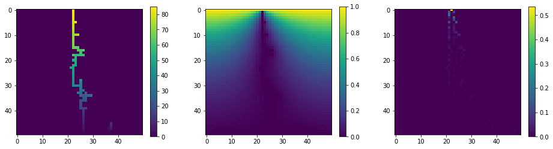

---
redirect_from:
  - "/essays/exercises/essayseeds/stormcloud-lightning"
interact_link: content/essays/exercises/essayseeds/Stormcloud_Lightning.ipynb
kernel_name: python3
kernel_path: content/essays/exercises/essayseeds
has_widgets: false
title: |-
  Lightning Template
pagenum: 28
prev_page:
  url: /essays/exercises/essayseeds/StormCloud.html
next_page:
  url: 
suffix: .ipynb
search: lightning potential ground where cloud path values move points boundary conditions grid method defined b lightnings simulation electric based called set specified value nan charge holds d stormcloud create solve poissons equation order space strike next function relaxation region given places neighboring get poisson solver simulate starting locations positions possible investigate happens does us anything cases leaders charged ions streamers introduction notebook model bolt throughout predict begins repeat process advances import essential tools numpy matplotlib along formatting command speeds processing define rectangular using relies fact charges only change gradually well certain averaging doing eventually stable solution following array assumed not

comment: "***PROGRAMMATICALLY GENERATED, DO NOT EDIT. SEE ORIGINAL FILES IN /content***"
---

    <main class="jupyter-page">
    <div id="page-info"><div id="page-title">Lightning Template</div>
</div>
    <div class="jb_cell">

<div class="cell border-box-sizing text_cell rendered"><div class="inner_cell">
<div class="text_cell_render border-box-sizing rendered_html">
<h1 id="Introduction:-2D-Stormcloud,-with-lightning">Introduction: 2D Stormcloud, with lightning<a class="anchor-link" href="#Introduction:-2D-Stormcloud,-with-lightning"> </a></h1><p>In this notebook, we will model the path of a bolt of lightning. This simulation will create a grid of points and then solve Poisson's equation on that grid in order to find the electric potential throughout the 2D space. Based on that electric potential, it will predict where the lightning strike begins, then repeat the process to see how it advances.</p>

</div>
</div>
</div>
</div>

<div class="jb_cell">

<div class="cell border-box-sizing text_cell rendered"><div class="inner_cell">
<div class="text_cell_render border-box-sizing rendered_html">
<p>First, we import the essential tools: numpy and matplotlib, along with some formatting and a command that speeds up processing.</p>

</div>
</div>
</div>
</div>

<div class="jb_cell">

<div class="cell border-box-sizing code_cell rendered">
<div class="input">

<div class="inner_cell">
    <div class="input_area">
<div class=" highlight hl-ipython3"><pre><span></span><span class="kn">import</span> <span class="nn">numpy</span> <span class="k">as</span> <span class="nn">np</span>
<span class="kn">import</span> <span class="nn">matplotlib.pyplot</span> <span class="k">as</span> <span class="nn">plt</span>
<span class="o">%</span><span class="k">matplotlib</span> inline
<span class="kn">from</span> <span class="nn">numba</span> <span class="kn">import</span> <span class="n">jit</span> <span class="c1">#this speeds up the loops in the simulation</span>
</pre></div>

    </div>
</div>
</div>

</div>
</div>

<div class="jb_cell">

<div class="cell border-box-sizing text_cell rendered"><div class="inner_cell">
<div class="text_cell_render border-box-sizing rendered_html">
<p>Next, we define a function that will solve Poisson's equation on a rectangular grid, using a method called the "method of relaxation." This method relies on the fact that, as long as there are no charges in a region, the potential in that region will only change gradually. So, given a set of boundary conditions (places where the potential is specified or well defined) we can find the values of electric potential at certain points by averaging the potential of neighboring points. By doing this over and over, we eventually get a stable solution.</p>
<p>In the following function, the boundary conditions are given by the array b. In the points where b is defined (has a value), the boundary conditions are assumed to be this value. Where b is 'nan' (not defined—that is, we have yet to find it) we use the method of relaxation to find the value.</p>

</div>
</div>
</div>
</div>

<div class="jb_cell">

<div class="cell border-box-sizing code_cell rendered">
<div class="input">

<div class="inner_cell">
    <div class="input_area">
<div class=" highlight hl-ipython3"><pre><span></span><span class="c1"># The jit command ensures fast execution using numba</span>
<span class="nd">@jit</span>
<span class="k">def</span> <span class="nf">solvepoisson</span><span class="p">(</span><span class="n">b</span><span class="p">,</span><span class="n">nrep</span><span class="p">):</span>
    <span class="c1"># b = boundary conditions</span>
    <span class="c1"># nrep = number of iterations</span>

    <span class="n">z</span> <span class="o">=</span> <span class="n">np</span><span class="o">.</span><span class="n">copy</span><span class="p">(</span><span class="n">b</span><span class="p">)</span>     <span class="c1"># z = electric potential field</span>
    <span class="n">j</span> <span class="o">=</span> <span class="n">np</span><span class="o">.</span><span class="n">where</span><span class="p">(</span><span class="n">np</span><span class="o">.</span><span class="n">isnan</span><span class="p">(</span><span class="n">b</span><span class="p">))</span> <span class="c1">#checks for where the points have no value, assigns them the value 0</span>
    <span class="n">z</span><span class="p">[</span><span class="n">j</span><span class="p">]</span> <span class="o">=</span> <span class="mf">0.0</span>
    
    <span class="n">znew</span> <span class="o">=</span> <span class="n">np</span><span class="o">.</span><span class="n">copy</span><span class="p">(</span><span class="n">z</span><span class="p">)</span>
    <span class="n">Lx</span> <span class="o">=</span> <span class="n">np</span><span class="o">.</span><span class="n">size</span><span class="p">(</span><span class="n">b</span><span class="p">,</span><span class="mi">0</span><span class="p">)</span> <span class="c1">#determine the x range of the point grid</span>
    <span class="n">Ly</span> <span class="o">=</span> <span class="n">np</span><span class="o">.</span><span class="n">size</span><span class="p">(</span><span class="n">b</span><span class="p">,</span><span class="mi">1</span><span class="p">)</span> <span class="c1">#determine the y range of the point grid</span>
    
    <span class="k">for</span> <span class="n">n</span> <span class="ow">in</span> <span class="nb">range</span><span class="p">(</span><span class="n">nrep</span><span class="p">):</span> 
        <span class="k">for</span> <span class="n">ix</span> <span class="ow">in</span> <span class="nb">range</span><span class="p">(</span><span class="n">Lx</span><span class="p">):</span>
            <span class="k">for</span> <span class="n">iy</span> <span class="ow">in</span> <span class="nb">range</span><span class="p">(</span><span class="n">Ly</span><span class="p">):</span>
                <span class="n">ncount</span> <span class="o">=</span> <span class="mf">0.0</span> 
                <span class="n">pot</span> <span class="o">=</span> <span class="mf">0.0</span>
                <span class="k">if</span> <span class="p">(</span><span class="n">np</span><span class="o">.</span><span class="n">isnan</span><span class="p">(</span><span class="n">b</span><span class="p">[</span><span class="n">ix</span><span class="p">,</span><span class="n">iy</span><span class="p">])):</span> <span class="c1">#check for cases in which the value is unspecified in the original grid</span>
                    <span class="c1">#Now, add up the potentials of all the the points around it</span>
                    <span class="k">if</span> <span class="p">(</span><span class="n">ix</span><span class="o">&gt;</span><span class="mi">0</span><span class="p">):</span> 
                        <span class="n">ncount</span> <span class="o">=</span> <span class="n">ncount</span> <span class="o">+</span> <span class="mf">1.0</span>
                        <span class="n">pot</span> <span class="o">=</span> <span class="n">pot</span> <span class="o">+</span> <span class="n">z</span><span class="p">[</span><span class="n">ix</span><span class="o">-</span><span class="mi">1</span><span class="p">,</span><span class="n">iy</span><span class="p">]</span>
                    <span class="k">if</span> <span class="p">(</span><span class="n">ix</span><span class="o">&lt;</span><span class="n">Lx</span><span class="o">-</span><span class="mi">1</span><span class="p">):</span>
                        <span class="n">ncount</span> <span class="o">=</span> <span class="n">ncount</span> <span class="o">+</span> <span class="mf">1.0</span>
                        <span class="n">pot</span> <span class="o">=</span> <span class="n">pot</span> <span class="o">+</span> <span class="n">z</span><span class="p">[</span><span class="n">ix</span><span class="o">+</span><span class="mi">1</span><span class="p">,</span><span class="n">iy</span><span class="p">]</span>
                    <span class="k">if</span> <span class="p">(</span><span class="n">iy</span><span class="o">&gt;</span><span class="mi">0</span><span class="p">):</span>
                        <span class="n">ncount</span> <span class="o">=</span> <span class="n">ncount</span> <span class="o">+</span> <span class="mf">1.0</span>
                        <span class="n">pot</span> <span class="o">=</span> <span class="n">pot</span> <span class="o">+</span> <span class="n">z</span><span class="p">[</span><span class="n">ix</span><span class="p">,</span><span class="n">iy</span><span class="o">-</span><span class="mi">1</span><span class="p">]</span>
                    <span class="k">if</span> <span class="p">(</span><span class="n">iy</span><span class="o">&lt;</span><span class="n">Ly</span><span class="o">-</span><span class="mi">1</span><span class="p">):</span>
                        <span class="n">ncount</span> <span class="o">=</span> <span class="n">ncount</span> <span class="o">+</span> <span class="mf">1.0</span>
                        <span class="n">pot</span> <span class="o">=</span> <span class="n">pot</span> <span class="o">+</span> <span class="n">z</span><span class="p">[</span><span class="n">ix</span><span class="p">,</span><span class="n">iy</span><span class="o">+</span><span class="mi">1</span><span class="p">]</span>
                    <span class="n">znew</span><span class="p">[</span><span class="n">ix</span><span class="p">,</span><span class="n">iy</span><span class="p">]</span> <span class="o">=</span> <span class="n">pot</span><span class="o">/</span><span class="n">ncount</span> <span class="c1">#Divide by the number of contributing surrounding points to find average potential</span>
                <span class="k">else</span><span class="p">:</span>
                    <span class="n">znew</span><span class="p">[</span><span class="n">ix</span><span class="p">,</span><span class="n">iy</span><span class="p">]</span><span class="o">=</span><span class="n">z</span><span class="p">[</span><span class="n">ix</span><span class="p">,</span><span class="n">iy</span><span class="p">]</span> <span class="c1">#If the value is specified, keep it</span>
        <span class="n">tmp_z</span> <span class="o">=</span> <span class="n">znew</span> <span class="c1"># Swapping the field used for the calucaltions with the field from the previous iteration</span>
        <span class="n">znew</span> <span class="o">=</span> <span class="n">z</span>     <span class="c1"># (to prepare for the next iteration)</span>
        <span class="n">z</span> <span class="o">=</span> <span class="n">tmp_z</span>     
    <span class="k">return</span> <span class="n">z</span> 
</pre></div>

    </div>
</div>
</div>

</div>
</div>

<div class="jb_cell">

<div class="cell border-box-sizing text_cell rendered"><div class="inner_cell">
<div class="text_cell_render border-box-sizing rendered_html">
<p>Now, we will use the poisson solver to simulate lightning. First, we will set up the boundary conditions, creating a grid of 50 by 50 points, setting all values to 'nan' (meaning they need to be solved for) except at the top (the cloud) where the potential is specified to be 1, and at the bottom (the ground) where it is specified to be zero.</p>

</div>
</div>
</div>
</div>

<div class="jb_cell">

<div class="cell border-box-sizing code_cell rendered">
<div class="input">

<div class="inner_cell">
    <div class="input_area">
<div class=" highlight hl-ipython3"><pre><span></span><span class="c1"># First, we set up the boundary conditions</span>
<span class="n">Lx</span> <span class="o">=</span> <span class="mi">50</span>
<span class="n">Ly</span> <span class="o">=</span> <span class="mi">50</span>
<span class="n">z</span> <span class="o">=</span> <span class="n">np</span><span class="o">.</span><span class="n">zeros</span><span class="p">((</span><span class="n">Lx</span><span class="p">,</span><span class="n">Ly</span><span class="p">),</span><span class="nb">float</span><span class="p">)</span>
<span class="n">b</span> <span class="o">=</span> <span class="n">np</span><span class="o">.</span><span class="n">copy</span><span class="p">(</span><span class="n">z</span><span class="p">)</span>
<span class="n">c</span> <span class="o">=</span> <span class="n">np</span><span class="o">.</span><span class="n">copy</span><span class="p">(</span><span class="n">z</span><span class="p">)</span>
<span class="n">b</span><span class="p">[:]</span> <span class="o">=</span> <span class="n">np</span><span class="o">.</span><span class="n">float</span><span class="p">(</span><span class="s1">&#39;nan&#39;</span><span class="p">)</span>

<span class="c1"># Set the potential at the top of the grid to 1</span>
<span class="n">b</span><span class="p">[:,</span><span class="mi">0</span><span class="p">]</span> <span class="o">=</span> <span class="mf">1.0</span>

<span class="c1"># Set the potential at the bottom of the grid to 0</span>
<span class="n">b</span><span class="p">[:,</span><span class="n">Ly</span><span class="o">-</span><span class="mi">1</span><span class="p">]</span><span class="o">=</span><span class="mf">0.0</span>
</pre></div>

    </div>
</div>
</div>

</div>
</div>

<div class="jb_cell">

<div class="cell border-box-sizing text_cell rendered"><div class="inner_cell">
<div class="text_cell_render border-box-sizing rendered_html">
<p>Now, to add in the lightning. To simulate the path of the lightning strike we will work backwards, starting with some charge on the ground and seeing where it moves to in order to get up to the cloud (this is simulating so-called "ground to cloud" lightning). This charge, because it is negative, prefers to stay at low potential, in this case V = 0. So, to find the path of the lightning, we will proceed as follows:</p>
<ol>
<li>Use the poisson solver to find the potential across the entire space, ground to cloud, starting with the ground</li>
<li>Find where the charge is most likely to move to, based on the potential values multiplied by a random factor</li>
<li>Set that location's potential equal to 0</li>
<li>Update the neighboring positions to the lightning's path, making them possible locations for the lightning's next move</li>
</ol>
<p>In practice, this means we will be working with three arrays: The first holds the boundary values and the lightning's path (we call that one <strong>b</strong>; it was already defined, but will be updated based on the lightning's path). The second holds the possible places the lightning can move, stored as 'nan' values (we call that one <strong>zeroneighbor</strong>). The last holds the probabilistic values that lighting will move to particular positions (we call that one <strong>sprob</strong>).</p>

</div>
</div>
</div>
</div>

<div class="jb_cell">

<div class="cell border-box-sizing code_cell rendered">
<div class="input">

<div class="inner_cell">
    <div class="input_area">
<div class=" highlight hl-ipython3"><pre><span></span><span class="c1"># Create a copy of the boundary conditions matrix which will be used to check </span>
<span class="c1">#for possible locations for the lightning&#39;s path</span>
<span class="n">zeroneighbor</span> <span class="o">=</span> <span class="n">np</span><span class="o">.</span><span class="n">copy</span><span class="p">(</span><span class="n">z</span><span class="p">)</span> 
<span class="n">zeroneighbor</span><span class="p">[:]</span> <span class="o">=</span> <span class="mf">0.0</span> <span class="c1">#set all values in it equal to 0</span>
<span class="c1">#set the values next to the ground equal to &#39;nan&#39;. This is where the lightning can start</span>
<span class="n">zeroneighbor</span><span class="p">[:,</span><span class="n">Ly</span><span class="o">-</span><span class="mi">2</span><span class="p">]</span> <span class="o">=</span> <span class="n">np</span><span class="o">.</span><span class="n">float</span><span class="p">(</span><span class="s1">&#39;nan&#39;</span><span class="p">)</span> 


<span class="n">nrep</span> <span class="o">=</span> <span class="mi">3000</span> <span class="c1"># Number of jacobi steps</span>
<span class="n">eta</span> <span class="o">=</span> <span class="mf">1.0</span> <span class="c1">#A factor that will be used in probability calculation</span>
<span class="n">ymin</span> <span class="o">=</span> <span class="n">Ly</span><span class="o">-</span><span class="mi">1</span> <span class="c1">#The y value where we will stop (just above the ground)</span>
<span class="n">ns</span> <span class="o">=</span> <span class="mi">0</span>
<span class="k">while</span> <span class="p">(</span><span class="n">ymin</span><span class="o">&gt;</span><span class="mi">0</span><span class="p">):</span> 
    <span class="c1"># First find potential on the entire grid, based on the original boundary conditions</span>
    <span class="n">s</span> <span class="o">=</span> <span class="n">solvepoisson</span><span class="p">(</span><span class="n">b</span><span class="p">,</span><span class="n">nrep</span><span class="p">)</span>

    <span class="c1"># Probability that lightning will move to a new position may depend on potential to power eta</span>
    <span class="n">sprob</span> <span class="o">=</span> <span class="n">s</span><span class="o">**</span><span class="n">eta</span>
    <span class="c1"># We also multiply by a random number, uniform between 0 and 1, to introduce some randomness</span>
    <span class="c1"># And we multiply with isnan(zeroneighbor) to ensure only &#39;nan&#39; points can be chosen</span>
    <span class="n">sprob</span> <span class="o">=</span> <span class="n">sprob</span><span class="o">*</span><span class="n">np</span><span class="o">.</span><span class="n">random</span><span class="o">.</span><span class="n">uniform</span><span class="p">(</span><span class="mi">0</span><span class="p">,</span><span class="mi">1</span><span class="p">,(</span><span class="n">Lx</span><span class="p">,</span><span class="n">Ly</span><span class="p">))</span><span class="o">*</span><span class="n">np</span><span class="o">.</span><span class="n">isnan</span><span class="p">(</span><span class="n">zeroneighbor</span><span class="p">)</span> 
    
    <span class="c1">#now, find the point with max probability </span>
    <span class="p">[</span><span class="n">ix</span><span class="p">,</span><span class="n">iy</span><span class="p">]</span> <span class="o">=</span> <span class="n">np</span><span class="o">.</span><span class="n">unravel_index</span><span class="p">(</span><span class="n">np</span><span class="o">.</span><span class="n">argmax</span><span class="p">(</span><span class="n">sprob</span><span class="p">,</span><span class="n">axis</span><span class="o">=</span><span class="kc">None</span><span class="p">),</span><span class="n">sprob</span><span class="o">.</span><span class="n">shape</span><span class="p">)</span>
    
    <span class="c1"># Update the boundary condition array to set the potential where the lightning is to 0</span>
    <span class="n">b</span><span class="p">[</span><span class="n">ix</span><span class="p">,</span><span class="n">iy</span><span class="p">]</span> <span class="o">=</span> <span class="mf">0.0</span>
    
    <span class="c1"># Update neighbor positions of the lightning path to &#39;nan&#39; (making them possible choices for the next iteration) </span>
    <span class="k">if</span> <span class="p">(</span><span class="n">ix</span><span class="o">&gt;</span><span class="mi">0</span><span class="p">):</span>
        <span class="n">zeroneighbor</span><span class="p">[</span><span class="n">ix</span><span class="o">-</span><span class="mi">1</span><span class="p">,</span><span class="n">iy</span><span class="p">]</span><span class="o">=</span><span class="n">np</span><span class="o">.</span><span class="n">float</span><span class="p">(</span><span class="s1">&#39;nan&#39;</span><span class="p">)</span>
    <span class="k">if</span> <span class="p">(</span><span class="n">ix</span><span class="o">&lt;</span><span class="n">Lx</span><span class="o">-</span><span class="mi">1</span><span class="p">):</span>
        <span class="n">zeroneighbor</span><span class="p">[</span><span class="n">ix</span><span class="o">+</span><span class="mi">1</span><span class="p">,</span><span class="n">iy</span><span class="p">]</span><span class="o">=</span><span class="n">np</span><span class="o">.</span><span class="n">float</span><span class="p">(</span><span class="s1">&#39;nan&#39;</span><span class="p">)</span>
    <span class="k">if</span> <span class="p">(</span><span class="n">iy</span><span class="o">&gt;</span><span class="mi">0</span><span class="p">):</span>
        <span class="n">zeroneighbor</span><span class="p">[</span><span class="n">ix</span><span class="p">,</span><span class="n">iy</span><span class="o">-</span><span class="mi">1</span><span class="p">]</span><span class="o">=</span><span class="n">np</span><span class="o">.</span><span class="n">float</span><span class="p">(</span><span class="s1">&#39;nan&#39;</span><span class="p">)</span>
    <span class="k">if</span> <span class="p">(</span><span class="n">iy</span><span class="o">&lt;</span><span class="n">Ly</span><span class="o">-</span><span class="mi">1</span><span class="p">):</span>
        <span class="n">zeroneighbor</span><span class="p">[</span><span class="n">ix</span><span class="p">,</span><span class="n">iy</span><span class="o">+</span><span class="mi">1</span><span class="p">]</span><span class="o">=</span><span class="n">np</span><span class="o">.</span><span class="n">float</span><span class="p">(</span><span class="s1">&#39;nan&#39;</span><span class="p">)</span>
        
    <span class="n">ns</span> <span class="o">=</span> <span class="n">ns</span> <span class="o">+</span> <span class="mi">1</span>
    <span class="n">c</span><span class="p">[</span><span class="n">ix</span><span class="p">,</span><span class="n">iy</span><span class="p">]</span> <span class="o">=</span> <span class="n">ns</span> <span class="c1">#create an array of the lightning&#39;s path, scaled by the number of loops</span>
    <span class="k">if</span> <span class="p">(</span><span class="n">iy</span><span class="o">&lt;</span><span class="n">ymin</span><span class="p">):</span> <span class="c1">#iterate to the next set of y-values</span>
        <span class="n">ymin</span> <span class="o">=</span> <span class="n">iy</span>
</pre></div>

    </div>
</div>
</div>

</div>
</div>

<div class="jb_cell">

<div class="cell border-box-sizing code_cell rendered">
<div class="input">

<div class="inner_cell">
    <div class="input_area">
<div class=" highlight hl-ipython3"><pre><span></span><span class="n">plt</span><span class="o">.</span><span class="n">rcParams</span><span class="p">[</span><span class="s1">&#39;figure.figsize&#39;</span><span class="p">]</span> <span class="o">=</span> <span class="p">[</span><span class="mi">16</span><span class="p">,</span> <span class="mi">4</span><span class="p">]</span>
<span class="n">plt</span><span class="o">.</span><span class="n">subplot</span><span class="p">(</span><span class="mi">1</span><span class="p">,</span><span class="mi">3</span><span class="p">,</span><span class="mi">1</span><span class="p">)</span>
<span class="n">plt</span><span class="o">.</span><span class="n">imshow</span><span class="p">(</span><span class="n">c</span><span class="o">.</span><span class="n">T</span><span class="p">)</span> <span class="c1">#create a plot of the lightning&#39;s path</span>
<span class="n">plt</span><span class="o">.</span><span class="n">colorbar</span><span class="p">()</span>

<span class="n">plt</span><span class="o">.</span><span class="n">subplot</span><span class="p">(</span><span class="mi">1</span><span class="p">,</span><span class="mi">3</span><span class="p">,</span><span class="mi">2</span><span class="p">)</span>
<span class="n">plt</span><span class="o">.</span><span class="n">imshow</span><span class="p">(</span><span class="n">s</span><span class="o">.</span><span class="n">T</span><span class="p">)</span> <span class="c1">#create a plot of the final potential</span>
<span class="n">plt</span><span class="o">.</span><span class="n">colorbar</span><span class="p">()</span>

<span class="n">plt</span><span class="o">.</span><span class="n">subplot</span><span class="p">(</span><span class="mi">1</span><span class="p">,</span><span class="mi">3</span><span class="p">,</span><span class="mi">3</span><span class="p">)</span>
<span class="n">plt</span><span class="o">.</span><span class="n">imshow</span><span class="p">(</span><span class="n">sprob</span><span class="o">.</span><span class="n">T</span><span class="p">)</span> <span class="c1">#create a plot of the relative probabilities of the next step</span>
<span class="n">plt</span><span class="o">.</span><span class="n">colorbar</span><span class="p">()</span>
<span class="n">plt</span><span class="o">.</span><span class="n">show</span><span class="p">()</span>
</pre></div>

    </div>
</div>
</div>

<div class="output_wrapper">
<div class="output">

<div class="jb_output_wrapper }}">
<div class="output_area">


<div class="output_png output_subarea ">

</div>

</div>
</div>
</div>
</div>

</div>
</div>

<div class="jb_cell">

<div class="cell border-box-sizing text_cell rendered"><div class="inner_cell">
<div class="text_cell_render border-box-sizing rendered_html">
<h2 id="Additional-questions-you-might-investigate">Additional questions you might investigate<a class="anchor-link" href="#Additional-questions-you-might-investigate"> </a></h2><ol>
<li>What happens if there is a lightning rod or other conductor attached to the ground?<ul>
<li>Remember that that E = 0 inside conductors, so there will be a constant potential around the edge</li>
</ul>
</li>
<li>What happens if the stormcloud has a defined shape?</li>
<li>Does this simulation tell us anything about other cases, like cloud-to-ground lightning?<ul>
<li>In real cases of cloud-to-ground lightning, lightning strikes consist of so-called "leaders" (charged ions that move down from a cloud) and "streamers" (oppositely charged ions that move upwards from the ground to meet the leader). Does this simulation allow us to understand anything about the conditions that create leaders and/or streamers?</li>
</ul>
</li>
</ol>
<p><em>(Note that these are just meant to be suggestions—feel free to investigate any question you find interesting!)</em></p>

</div>
</div>
</div>
</div>

 


    </main>
    